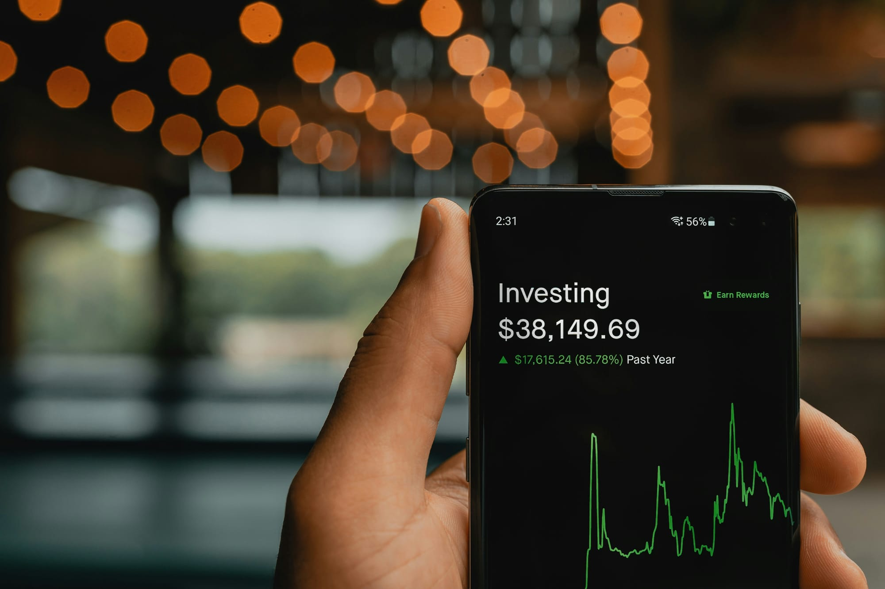

How to Invest Your First $1,000 (The Beginner's Complete Guide for 2026)
Ready to invest your first $1,000 but don't know where to start? This beginner's guide shows you exactly what to do step by step in 2026.
Z Zar · 17 Apr 2026 — 3 min read

📚 Part of our Complete Investing Guide
Your first $1,000 invested is the most important $1,000 you will ever invest. Not because of the amount — $1,000 will not make you rich on its own — but because of what it does to your mindset. Once you are an investor, you think differently about money.
Here is exactly what to do with your first $1,000.
Before You Invest: Two Boxes to Check
Box 1: Do you have an emergency fund? Before investing, you need at least $1,000 in a high-yield savings account for emergencies. If you do not have this yet, build it first. Investing without an emergency fund means you might have to sell your investments at a loss when life happens.
Box 2: Do you have high-interest debt? If you have credit card debt above 15% interest, pay it off before investing. No investment reliably returns 20%+ — paying off high-interest debt is the best guaranteed return you can get.
If both boxes are checked, you are ready to invest.
Step 1: Choose Where to Invest
For your first $1,000, you have two main options:
A Roth IRA — the best account for most beginners. You invest after-tax dollars, your money grows tax-free, and you pay zero taxes on withdrawals in retirement. The 2026 contribution limit is $7,000/year. Open one at Fidelity, Vanguard, or Charles Schwab — all free.
A taxable brokerage account — no contribution limits, accessible anytime, but you pay taxes on gains. Good if you have already maxed your Roth IRA or need flexibility.
For most beginners, start with a Roth IRA.
Step 2: Choose What to Buy
With $1,000, keep it simple. One or two index funds is all you need.
Option A — The one-fund portfolio: VT (Vanguard Total World Stock ETF) — covers the entire global stock market in one fund. Expense ratio: 0.07%. Buy this and forget about it.
Option B — The two-fund portfolio:
- VTI (US stocks) — 80% of your $1,000
- VXUS (International stocks) — 20% of your $1,000
This covers virtually every publicly traded company on earth at near-zero cost.
Do not buy individual stocks with your first $1,000. The odds of picking winners consistently are against you. Index funds guarantee you get the market's return — which beats most professional investors over the long term.
Step 3: Set Up Automatic Contributions
After your initial $1,000 investment, set up an automatic monthly contribution — even $50 or $100/month makes a dramatic difference over time.
$200/month invested for 30 years at a 7% average annual return grows to over $227,000.
The amount matters less than the consistency.
Step 4: Do Not Touch It
This is the hardest part. When the market drops — and it will drop — everything in your brain will tell you to sell. Do not.
Market downturns are temporary. Long-term investors who stay the course always recover. Those who panic-sell lock in losses and miss the recovery.
Set your investments up, automate contributions, and check your account no more than once a month.
What $1,000 Grows to Over Time
At a 7% average annual return (the historical average of the S&P 500 after inflation):
- After 10 years: $1,967
- After 20 years: $3,870
- After 30 years: $7,612
That is your $1,000 turning into $7,612 without adding another penny. With regular monthly contributions, the numbers become life-changing.
The Bottom Line
Investing your first $1,000 is not complicated. Open a Roth IRA, buy a simple index fund, set up automatic contributions, and leave it alone.
The best time to start was 10 years ago. The second best time is today.
📥 Free download: The 10-Step Financial Independence Checklist
The exact roadmap I followed to build my financial foundation. 11 pages, professionally designed, free with email signup — no credit card, unsubscribe anytime.
Disclosure: This post may contain affiliate links. ZarWealth may earn a commission if you sign up through our links, at no extra cost to you.
The Foundation Every First-Time Investor Needs
The Psychology of Money
by Morgan Housel
First-time investors make predictable mistakes. Housel's book is the antidote — it teaches the mindset that turns a $1,000 start into generational wealth.